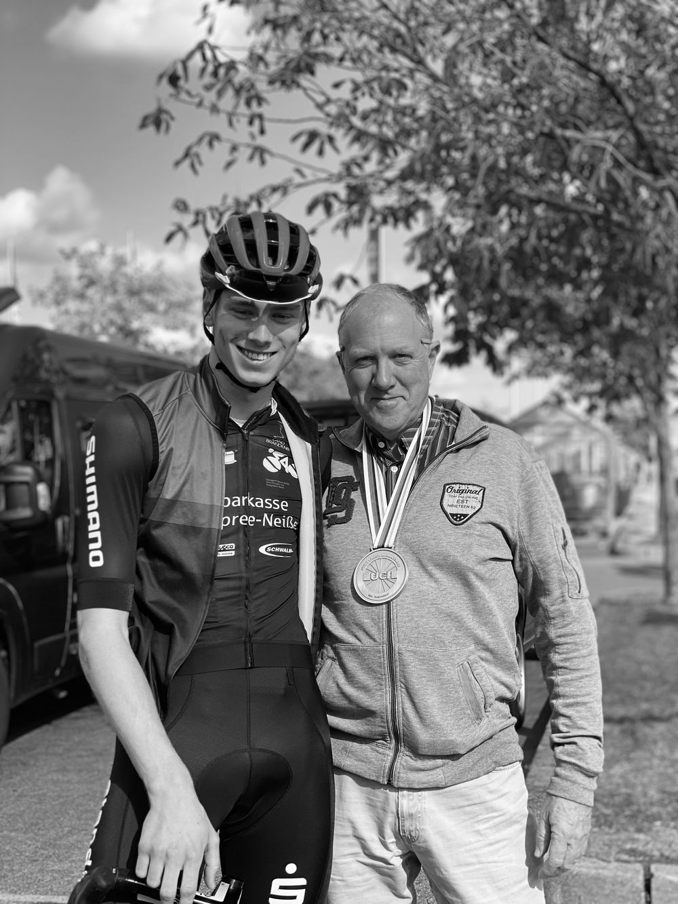

Hey, schön dass du da bist 👋
Ich bin Lui Bengelsdorf.
Mit 14 aufs Sportinternat, bis zur WM-Medaille – und 2025 dann der Schritt raus aus dem Leistungssport. Wenn du gerade vor ähnlichen Fragen stehst: Schreib mir.
Schreib mir
Über mich
Ursprünglich komme ich aus Mecklenburg-Vorpommern. 2019, mit 14, habe ich meine Sachen gepackt, bin an die Sportschule gewechselt und ins Internat gezogen – ich wollte einfach das Bestmögliche aus meinem Sport herausholen. Training, Schule, Wettkämpfe: Das war ab da mein Alltag. 2025 habe ich dort mein Abitur gemacht.
Heute wohne ich in Cottbus und bin im 2. Lehrjahr meiner Erzieherausbildung am DEB Cottbus. Mit Kindern und Jugendlichen zu arbeiten fühlt sich für mich richtig an – vielleicht auch, weil ich selbst so lange in Teams unterwegs war und weiß, wie viel gute Begleitung ausmacht.
Neun Jahre lang drehte sich bei mir alles um den Radsport. Inzwischen habe ich ein neues Kapitel aufgeschlagen, aber vom Radsport komme ich trotzdem nicht los: Ich verfolge die Rennen immer noch ziemlich genau, und Sport generell schaue ich sowieso gern.

Wenn du gerade vor so einer Entscheidung stehst
Mit 14 bin ich von zu Hause ausgezogen und aufs Sportinternat gegangen. Das war eine der größten Entscheidungen meines Lebens. Und in dem Alter macht man solche Fragen meistens mit sich selbst aus.
Der Sport hat mir unglaublich viel gegeben. Ich war an Orten, von denen ich am Anfang nie gedacht hätte, dass ich da mal hinkomme. Und aus dem Internatsleben sind Freundschaften entstanden, die bis heute halten.
Irgendwann musste ich mir aber auch ehrlich eingestehen, dass ich den Weg an die Spitze nicht mehr mit vollem Herzen gehe. Ich liebe den Radsport immer noch. Aber für mich steht die Freude an dem, was ich mache, an erster Stelle. Ohne sie macht man es nie mit ganzem Herzen.
Schreib mir, wenn du …
- überlegst, ob du für den Sport früh von zu Hause weg und aufs Internat gehen solltest
- lernen musst, mit dem Druck im Sport klarzukommen
- gerade aus der U17 oder U19 in den Erwachsenenbereich wechselst und dich fragst, wie es weitergeht
- merkst, dass die Freude fehlt, und dich fragst, ob sich der Aufwand noch lohnt
- als Mama oder Papa überlegst, ob du dein Kind aufs Internat gehen lassen sollst
- einfach hören willst, wie es bei jemand anderem war

Meine Zeit im Radsport
Von 2016 bis 2025 war ich Leistungsradsportler. Hier die Stationen, auf die ich besonders stolz bin:
-
2016
Der Anfang
Einstieg in den Leistungsradsport – ab da gab's kaum noch ein Wochenende ohne Training oder Rennen.
-
2019
Mit 14 aufs Sportinternat
Raus aus dem Elternhaus, rein in den Alltag aus Training, Schule und Wettkämpfen.
-
Nachwuchsjahre
6× Deutscher Meister
Sechs deutsche Meistertitel in den Nachwuchskategorien.
-
2023
Vize-Weltmeister in Cali 🇨🇴
Silber bei der WM in Kolumbien in der 4000-m-Mannschaftsverfolgung – mein größter Moment auf dem Rad.
-
2023
Gesamtsieg Junioren-Bundesliga
Die komplette Saison gewonnen – und obendrauf noch das Sprint-Trikot.
-
2025
Abitur & neues Kapitel
Abitur an der Sportschule und Abschied vom Leistungssport. Die Erfahrungen nehme ich mit – in die Ausbildung und alles, was kommt.

Schreib mir einfach
Egal ob große Entscheidung oder nur eine kleine Frage – kein Anliegen ist zu klein. Schick mir eine DM auf Instagram oder eine E-Mail, ganz unverbindlich. Und wenn du einfach über Radsport quatschen willst: gern auch das.